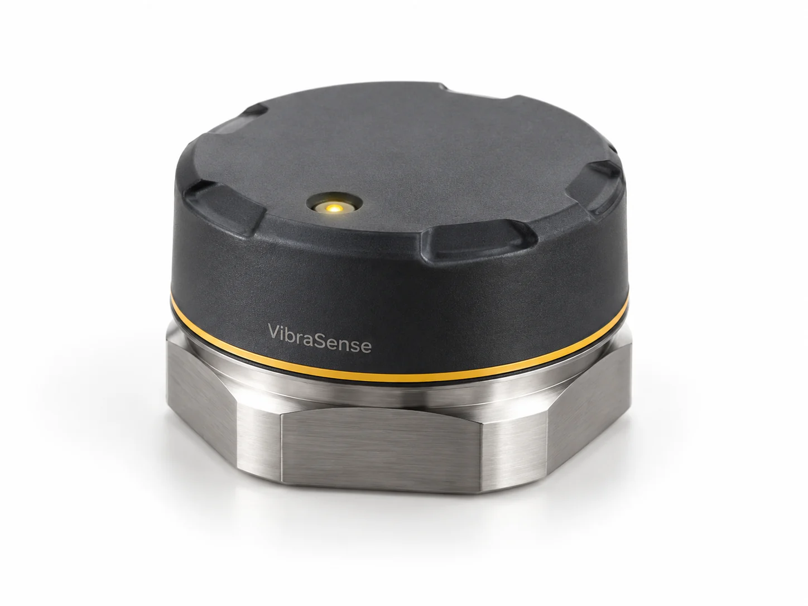

Explorer la surveillance des machines par l’acquisition et l’analyse de leurs vibrations.
Acquisition vibratoireTraitement du signalBasse consommationBluetooth LE

Visuel généré pour illustrer un concept fictif.L’usage envisagé
Suivre l’évolution vibratoire d’un moteur, d’une pompe ou d’un ventilateur pour aider à repérer un changement de fonctionnement.
L’architecture proposée
Un capteur sur batterie, fixé au plus près d’un palier, avec acquisition par fenêtres, calcul d’indicateurs et lecture locale sans fil.
Le statut
Un scénario technique à explorer, avec une stratégie d’essais définie avant toute promesse d’autonomie ou de détection.
Besoin et contraintes
Un suivi au plus près de la machine
VibraSense imagine un équipement compact installé sur une machine tournante pour comparer ses vibrations au fil du temps. L’objectif serait de compléter les inspections ponctuelles par des acquisitions répétées, accompagnées du contexte de fonctionnement.
Une variation pourrait inviter à une vérification de maintenance. Son interprétation dépendrait du régime, de la charge et du montage du capteur : une hausse des vibrations ne suffirait pas, à elle seule, à identifier une panne.
Conception et architecture
Du capteur aux indicateurs
L’architecture envisagée associerait un accéléromètre triaxial, un microcontrôleur basse consommation, une mémoire locale et une liaison Bluetooth LE. Le choix du capteur et de sa bande passante dépendrait des phénomènes à observer.
Acquérir : enregistrer des fenêtres de signal à cadence régulière, avec une horloge stable et un filtrage adapté avant échantillonnage.
Analyser : calculer des indicateurs tels que la valeur efficace, le facteur de crête et le contenu fréquentiel par FFT.
Comparer : rapprocher les acquisitions d’une référence prise dans des conditions de fonctionnement comparables.
Consulter : visualiser les tendances sur une interface locale et exporter les mesures pour une analyse complémentaire.
Les défis de conception
La fixation ferait partie de la chaîne de mesure. Une embase magnétique pourrait faciliter les essais sur des surfaces ferromagnétiques ; une fixation vissée serait à étudier pour obtenir un couplage plus répétable. Le montage devrait éviter de masquer ou d’introduire les vibrations recherchées.
Le boîtier devrait concilier tenue mécanique et transmission radio, tandis que le firmware arbitrerait entre durée des acquisitions, volume de données et consommation. La température ambiante, les perturbations électriques et le risque de saturation du capteur feraient partie du cadrage.
La fréquence d’échantillonnage, l’autonomie, la portée radio et la protection du boîtier ne sont pas spécifiées à ce stade. Ces cibles seraient fixées avec un cas d’usage, puis vérifiées sur prototype.
Réalisation et intégration
Aucune fabrication n’a été réalisée. Une première réalisation consisterait à comparer des capteurs et des montages sur banc avant de concevoir une carte et un boîtier dédiés.
Essais et validation
Du concept au prototype
Définir une machine cible, ses conditions d’utilisation et les évolutions à observer.
Comparer plusieurs capteurs et montages à une mesure de référence sur banc.
Développer une première carte et vérifier acquisition, filtrage, calculs et export.
Mesurer la consommation et éprouver la liaison radio dans l’environnement prévu.
Évaluer la répétabilité et les fausses alertes sur des scénarios de fonctionnement documentés.
Cette démarche permettrait de décider si le concept apporte une information exploitable avant d’engager un développement produit. Aucun résultat de détection, gain de maintenance ou niveau de précision n’est revendiqué.
Résultat et prochaines étapes
VibraSense reste un concept fictif exploratoire. Les fonctions, performances et choix de fabrication seraient à confirmer par une étude et des essais ; aucun résultat de prototype n’est revendiqué.
Un besoin d’instrumentation ?
Du signal à une mesure utile.
Définissons les capteurs, l’électronique et les essais adaptés à votre application.